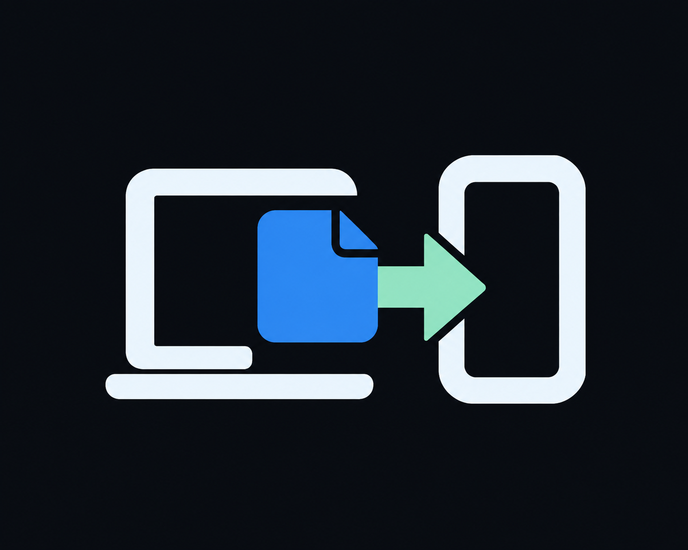

熟悉的设备，放心再连接。
首次验证设备身份，之后记住这份信任。下一次发送，从选择设备开始。

envoix.01 / MADE TO CONNECT
从建立信任，到确认送达。
每一个细节，都为下一次连接而准备。
首次验证设备身份，之后记住这份信任。下一次发送，从选择设备开始。
接收端校验并安全保存后，再确认完成。让每一次“已送达”，都有依据。
桌面后台服务接管持久任务。窗口可以离开，传输继续向前。
02 / PICK YOUR PLATFORM
属于 Mac 的原生体验。
现提供 CLI；SwiftUI 图形应用稍后开放。
窗口之外，依然在线。
图形客户端、命令行与后台服务。
把文件，带在身边。
Compose 原生客户端，APK 与 AAB。
从小屏幕，到大灵感。
SwiftUI 通用应用，支持系统分享。
也懂你的命令行。
CLI 与后台 Agent，为终端工作流而生。
代码公开，进展可见。
欢迎来看看下一步。
v0.3 使用新的本地状态格式。请保留接收文件、备份旧状态，并按操作说明重置旧产品状态后重新配对设备。Android 从旧测试签名切换到长期发布签名时，可能需要卸载旧版；卸载会清除应用数据。
阅读完整说明 ↗